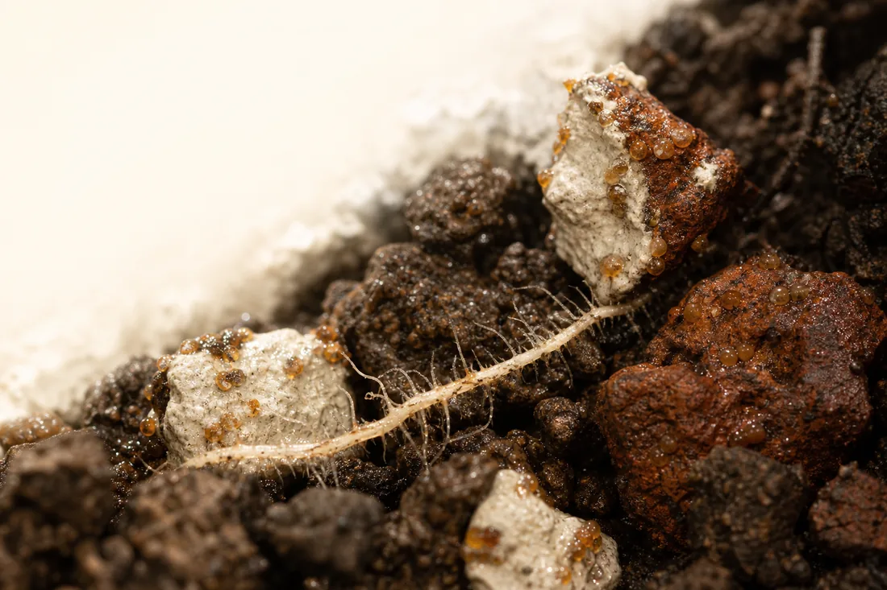
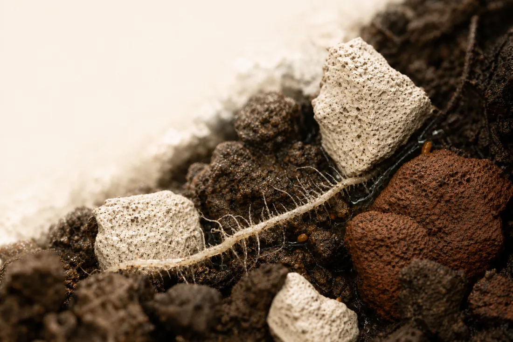
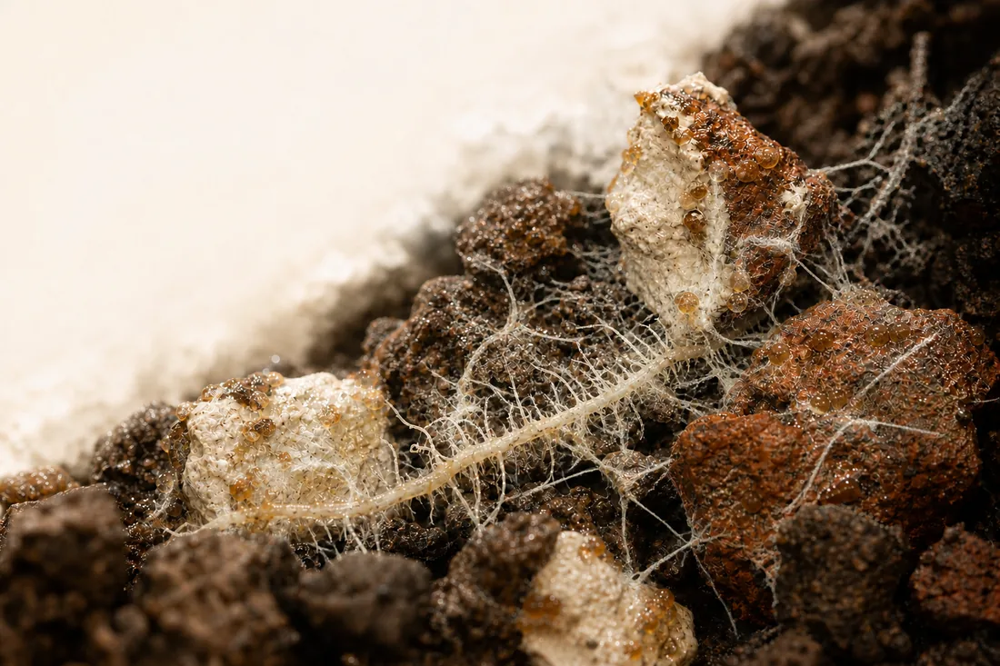
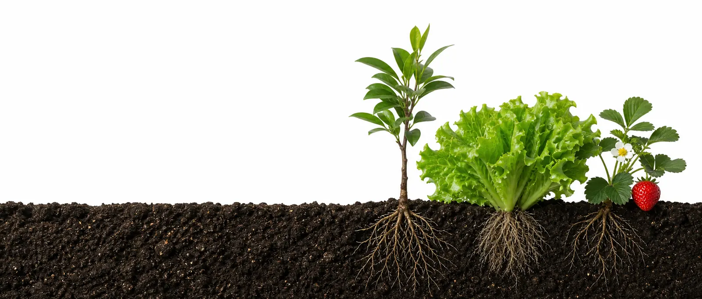
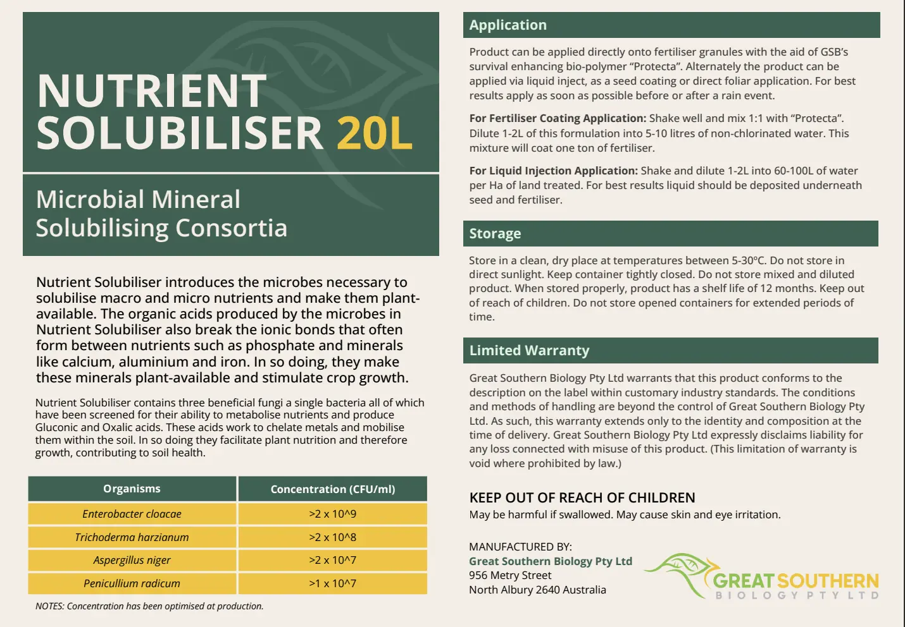
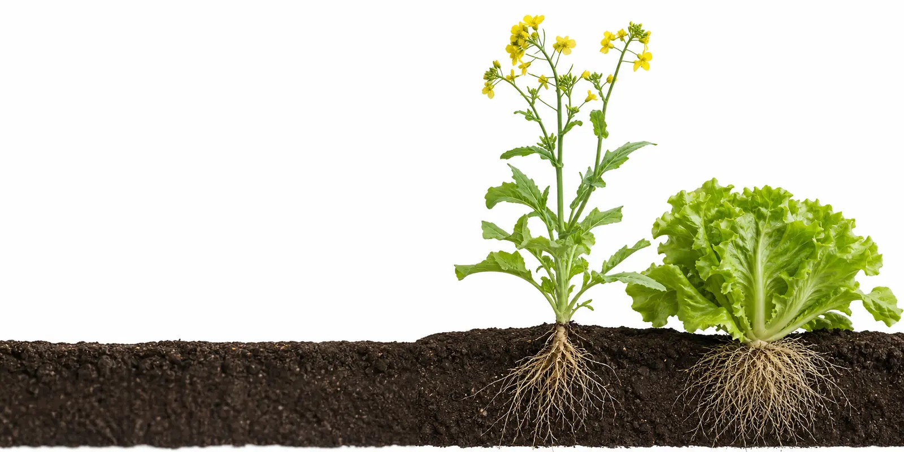
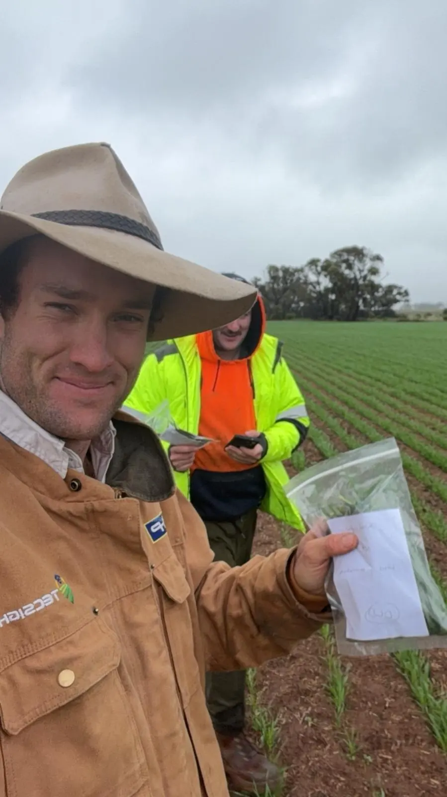

Range · Overview · 01 of 11
One range. Three distinct jobs.
Three targeted tools. One diagnosed sequence.
Selected biological products for Australian cropping systems. Three distinct jobs, timed around the crop cycle — each with its own evidence standard and claim boundary. Recommend only what the diagnosis supports; this is not a compulsory bundle or a proven synergy claim.
Three jobs · one diagnosed sequence

DIGESTER
After harvest
Role
Introduce selected decomposers and begin working through structural residue.
Payoff
Advance residue turnover ahead of the next crop.

SP
At establishment
Role
Place nutrient-solubilising biology where roots meet fixed phosphorus.
Payoff
Support access to fixed phosphorus already present.

LOCKOUT
Ahead of risk
Role
Establish beneficial biology before an adverse population dominates.
Payoff
Support occupation, competition and microbiome balance.
Digester works on residue. SP supports fixed-P access. Lockout establishes ahead of risk.
Use the right tool at the right point — only where the diagnosis supports it.
Internal formulation bridge · SP and Digester share a three-fungus base; the fourth organism supports a different product job. Final labels govern.
Start with three questions
1 · Is residue turnover the job?
Lead Digester · residue structure, moisture window, treatment record.
2 · Is P present but constrained?
Lead SP · soil P baseline, placement, matched crop-stage measure.
3 · Is a risk window approaching?
Lead Lockout · pressure window, establishment plan, label-approved route.
4 · Review · next decision
Repeat the same measure where it changes the plan.
Operating principles
- Start with the immediate job: residue, fixed-P access or an approaching biological risk window.
- Use final approved rate, route and compatibility guidance for the product selected.
- Placement, food, moisture and establishment determine biological performance.
- Define the baseline and success measure before application; involve GSB in interpretation.
- Protect live inputs from incompatible chemistry and unnecessary hold time.
- Keep internal observations separate from external claims.
- Review at the relevant crop stage; repeat the same method where direction matters.
Claim boundary
No controlled three-product synergy trial was presented.
No guaranteed synergy, yield, disease control, fertiliser replacement or identical response across soils and seasons.
Three distinct jobs · recommend only what the diagnosis supports
SP · Product play · 02 of 11
Mycro-Tec® SP
Support access to the mineral bank already in the soil — phosphorus first.
The role
A mineral-access layer — phosphorus leads, the wider nutrient bank follows.
Three beneficial fungi and one bacterium — E. cloacae, T. harzianum, A. niger and P. radicum — selected for nutrient metabolism and organic-acid production. Final label and SDS govern identity and count.
How it works · from fixation to biological access

01
Fixed
Only 20–30% of applied P is taken up. The rest fixes — with calcium in higher-pH soils; with iron and aluminium in lower-pH.

02
Organic acids
SP organisms produce organic acids — gluconic, oxalic and citric — around the root zone.

03
Separate
Those acids help separate phosphorus from the bonds. Activity continues only while viable biology establishes and remains active.
When SP is worth it
High fixation
High PBI, or known calcium fixation at higher pH and iron–aluminium fixation at lower pH. Only 20–30% of applied P is taken up; the rest is the target.
Reserve present
Strong fertiliser history but weak measured availability. There has to be a bank to release — establish a Colwell P baseline first.
Placement possible
Biology can be put where roots meet fixed reserves: in-furrow, fertigation or coating. Without placement there is no case.
What blunts it
Calcium on the same pass
Can re-fix phosphorus the biology has just released. Keep calcium off the SP pass.
Cold furrow
Below 15 °C the bacterium stalls, so the pass runs mostly on the three fungi — our inference, for GSB to confirm.
Tank chemistry + hold time
Fungicide, liquid zinc and seed treatments compromise viability. Clean non-chlorinated water; apply promptly.
The 15 °C bacterium-stall threshold is our inference, not a GSB-supplied figure. It is currently on the card as guidance to reps.
Can you confirm, correct or remove the 15 °C threshold and tell us what the pass actually runs on below it?
“Before adding more, establish what is already present but constrained. SP positions selected biology close to the root zone to support mineral solubilisation — phosphorus first.”
Claim lane
Say
- Supports mineral and nutrient solubilisation.
- Supports access to fixed phosphorus.
- Adds selected nutrient-solubilising biology.
- Supports the existing fertiliser strategy.
Do not say
- Replaces phosphorus fertiliser.
- Unlocks all soil nutrients.
- Guarantees nutrient uptake or yield.
- Permanently changes availability.

SP · Field + sell · 03 of 11
Where SP earns its place
Fit · placement · handling · proof · objections.
Fit · route · proof
Best-fit signals
- High PBI, known fixation or aluminium-associated lock-up.
- Strong P history but weak measured availability.
- Poor early root-zone nutrient access.
- A program seeking more value from existing reserves.
Routes, rate + handling
1–2 L/ha
Broadacre draft · horticulture 5–10 L/ha
In-furrow liquid — Lead route; final label approval
Seed coating — 2 L/t on label; figure is ours
Coated granule — Gerogery proof; not liquid proof
Fertigation — Brochure route (hort + viti) · compatibility governs
Clean non-chlorinated water · 1:100 · 60–100 L/ha · 5–30 °C · apply promptly · compatibility governs.
The SP brochure cover advertises a broadacre coating rate of 2 L/t. That figure is not on the SP label — the label gives 5–10 L, 1–2 L, 1:100 and 60–100 L/ha water, and nothing for seed. Our standing rule is that the final label governs every rate, so this is a live contradiction in customer-facing material.
Can 2 L/t seed coating go on the label? If not, we pull the figure from the brochure.
Field proof · Gerogery NSW
Gerogery canola field proof
52.7 ha · granular · at sowing · 20 kg/ha · Nov 2025
3.40 → 3.98 t/ha
+17% · +0.58 t/ha
Colwell P 42→57 · +35.7% NO₃ 26→38 · +46%
Also observed: NH₄-N 1→2 mg/kg; Colwell K 184→217 (+17.9%). Applied at 20 kg/ha through the fertiliser box at sowing. Pre-harvest soil tests confirmed the biology was working through movement in Colwell P. Granular field case — not liquid-rate proof or a guaranteed response.
NO₃ 26 → 38 mg/kg appears on our Results page attributed to GSB case study 2195. We have not verified it against the published study ourselves.
Can you confirm the nitrate movement as published, so we can either cite it or drop it?
Common questions
Why not apply more P?
More fertiliser does not resolve fixation. SP supports access to the existing nutrient bank.
How long does it persist?
No supported persistence window. If it changes the decision, repeat qPCR against a baseline.
Is liquid always better?
No. Judge form against placement: liquid carries metabolites and spores; powder may concentrate spores.
Can it handle pressure?
No verified whole-product pressure limit. Follow approved equipment guidance and apply promptly.
Mix with fungicide or seed treatment?
Only with documented compatibility. Fungicides, liquid zinc and seed chemistry can compromise biology.
What should success look like?
Define it first: repeat soil P, then add DSA or matched-stage tissue data where useful.
Digester · Product play · 04 of 11
Mycro-Tec® Digester
Turn residue into a managed biological process.
The role
Selected decomposer biology for post-harvest residue and stubble.
A deliberate biological starting point for structural breakdown — distinct from nutrition inputs or enzymes that may serve different jobs.
What it acts on · the structural matrix
CELLULOSE
Primary plant fibre
HEMICELLULOSE
Supporting fibre network
LIGNIN
Hard, resistant structure
PECTIN
Plant-cell binding material
How the process starts

01
Moisture base
Biology establishes first at the moisture-holding residue–soil interface, then expands through moist stubble.

02
Structure opens
Organic acids and enzymes open cellulose, hemicellulose, lignin and pectin, making structural carbon accessible.

03
Turnover builds
Selected organisms and the wider community continue the process.
When Digester is worth it
Residue that holds
Cereal, canola, legume, horticultural or orchard residue still intact into the next crop window.
High or lignified load
Heavy residue loads, or lignified material that has stalled over summer.
Moisture window
Applied reasonably early after harvest and close to forecast moisture — breakdown runs on residue moisture.
What blunts it
Prolonged heat and dryness
Confidence falls through hot, dry spells. Align application with a viable moisture window.
Overnight in the tank
In nutrient it grows more mycelia and blocks nozzles. Strain as you pour; keep nozzles and filters at 150 µm or larger.
Off-recipe mixes
Alternative recipes are not final. Use only the approved recipe; do not raise the starter with stubble load.
“Start with the job. Digester adds selected live decomposers to begin working through structural residue; nutrition and enzyme inputs operate through different mechanisms.”
Say
- Supports biological residue breakdown.
- Acts on structural residue components.
Do not say
- Removes all residue.
- Controls disease or guarantees disappearance.
Digester · Field + sell · 05 of 11
Where Digester earns its place
Fit · timing · rate · structural signals · objections.
Fit · timing · application
Best-fit signals
- Cereal, canola, legume, horticultural or orchard residue.
- High residue loads or lignified material.
- Residue remaining intact into the next crop window.
- A program seeking controlled turnover — not nutrition alone.
Timing
Apply reasonably early after harvest and close to forecast moisture.
Confidence falls through prolonged heat and dryness. Align application with a viable moisture window.
Standard
1–2 L/ha
After harvest
Heavy
3 L/ha max
Heavy residue
AMS starter
8 kg/ha
Every pass · fixed
Dilution
1:50
or as advised
Label 1–2 L/ha in 100 L/ha water; TDS 1–1.5, up to 3 L/ha extra-heavy — open. Do not raise the starter with stubble load · 5–40 °C · not on nut trees · final label governs.
Early structural signals
Base weakening
Activity begins at the damp residue base.
Easier pull-away
Residue releases more readily from the soil surface.
Lower strength
Structural fibres progressively soften and weaken.
Context · C:N
Track change over time; not instant disappearance.
Common questions
Why not nitrogen alone?
Nitrogen feeds resident biology. Digester adds selected decomposers; the starter remains separate.
Growth on top of the drum?
Mycelia — live fungi using the drum's air gap. Normal, and a sign the biology is active. Keep drums upright; the lids are vented.
Can it wait in the tank overnight?
No — overnight in nutrient it grows more mycelia and blocks nozzles. Strain as you pour; keep nozzles and filters at 150 µm or larger.
Fish, amino acids or urea?
Alternative recipes are not final. Use only the approved recipe.
Does it reduce stubble disease?
No. Competition for residue resources is not a disease-control position.
Why not an enzyme-only product?
Enzymes catalyse breakdown; Digester adds selected live decomposers. Compare mechanisms and evidence.
Digestubble trial data arrived Jul 2026: nine treatments, stubble carbon and mass to 120 days, with untreated and nitrogen-alone controls. Product identity against Digester is unconfirmed — nothing quotable yet. Still open: name confirmation, count basis, rate ladder, storage, starter, compatibility; align label, SDS, brochure and battlecard.
Mid-crop use was asked twice on 31 July and never answered; no in-crop use is endorsed.
Is Digestubble the same product as Digester? And can we have a position on mid-crop use?

Lockout · Product play · 06 of 11
Mycro-Tec® Lockout
Occupy · compete · balance.
The role
Proactive microbiome-management biology for the root zone and plant surface.
Establish beneficial organisms ahead of a known risk window — before an adverse population dominates the living zone.
The Figma card carries “three cert schemes on record (ACO 14270, NASAA 3620M, NOP)”. A page-wide trace found only one of the three is on Lockout's own label. NASAA Organic Certified 3620M is real — on the Lockout label and its brochure composition page. NOP appears only as artwork on the brochure cover with no certificate number, and contradicts the NASAA mark on the same product. ACO 14270 appears nowhere on Lockout as live text — it is a live claim on a different product (K-Max). None of the three SDSs mentions any certification scheme. The claim has been reduced to the strip above for this draft.
Which scheme actually covers Lockout, whose certificate is it, and what is the exact approved wording and scope? Please supply the current certificate.
The proposition · occupy · compete · balance
Occupy
Establish in the rhizosphere and on plant surfaces where approved.

Compete
Use food and ecological space before an adverse population dominates.

Balance
Support a more stable, populated living zone over time.
When Lockout is worth it
Known risk window
A repeatable pressure window you can plan around — in orchards, budswell through to pre-flowering.
Disrupted root zone
Testing shows an adverse population, or a weak beneficial base in the rhizosphere.
Time to establish
Applied ahead of pressure, with establishment time before the window opens.
How to set expectations
- Best fit is proactive establishment ahead of a defined window.
- Results depend on timing, conditions and successful establishment.
- Use only approved rate, route and frequency guidance.
- Define the baseline and review point before application.
- Keep disease-control and rescue claims outside the claim lane.
Certificate pending
Manufacturer to supply
Use the manufacturer's current certificate and exact approved wording once supplied. Do not infer scheme or scope from placeholder artwork.
What blunts it
Arriving late
Once an adverse population dominates, the living zone is hard to win back. Not rescue chemistry.
Dose thinking
A few million applied cells meet a billion residents per gram — multiplication, not dose, does the work.
Unapproved routes
Foliar is not established in the draft label, and no standard food-source recommendation is approved.
“Build the beneficial population first so the living zone is harder for an adverse population to dominate.”
Lockout · Field + sell · 07 of 11
Where Lockout earns its place
Fit · timing · placement · rate · objections.
Fit · timing · placement
Best-fit signals
- A known biological risk window is approaching.
- The root-zone microbiome is disrupted or poorly balanced.
- Intensive systems need proactive biological occupation.
- A repeatable pressure window is worth planning around.
- Testing shows an adverse population or weak beneficial base.
Timing
Build the population before pressure increases. In orchards, budswell through to pre-flowering.
Plan for predictable pre-risk windows, subject to crop and final label. Do not wait for severe symptoms and expect a rescue.
Placement
Soil — active root zone; final label governs.
Foliar · hold — not established in the draft label. Do not infer approval from another formulation.
Draft rate ladder
Preventative
5 L/ha
Light
10 L/ha
Heavy
20 L/ha
Dilution
1:20
Draft only · final terminology, route and conditions require Grant confirmation.
Qualify: known window · supporting test · establishment timing · water/chemistry · final crop and route.
Common questions
Does it kill or control disease?
No. Lockout occupies, competes and supports balance; it is not a pesticide or disease-control claim.
Can it rescue an infected crop?
No. Its strongest role is proactive establishment ahead of pressure.
Is a food source required?
No standard food-source recommendation is approved. Use product-specific written guidance only — and never molasses or simple sugars; they can feed the population already dominating.
Can it replace fungicide?
Do not make a blanket replacement recommendation. Build around diagnosis, risk and compatibility.
Can it mix with fungicide?
Only when the exact product, rate and timing are documented as compatible.
How many applications?
Use the final label and program. Define the establishment window; review response before repeating.
Evidence requested
- Queensland soil work — treatment, comparator, baseline and endpoint.
- Cotton work — crop stage, route, timing and repeated measures.
- Orchard work — pressure window, establishment timing, baseline and review point.
Until approved, treat these as Grant questions — not disease-efficacy proof.
Controlled product release gate
Label: three genera, average 10⁹ CFU/mL at production. The SDS names three species with individual counts — the two do not agree. No storage temperature exists for Lockout.
Confirm final rates/routes/compatibility; current organic certificate and wording; keep unpublished disease work internal; align label, SDS, brochure and battlecard.
Clean non-chlorinated water · apply promptly · no fungicide/biocide mixing without documented compatibility.
Say · occupy · compete · balance
- Occupies, competes and supports balance in the living zone.
Do not say · kill · control · suppress
- Any kill, control or suppression framing.
This card puts foliar on hold as “not established in the draft label”, but the live Lockout brochure publishes “application: foliar, fertigation, drench” to customers. Fertigation is absent from this card for both SP and Lockout, yet the SP cover advertises fertigation 5–10 L/ha for horticulture and viticulture, and every Lockout cover rate card reads “soil or fertigation”. The Lockout brochure also contradicts itself: cover says soil or fertigation, page 2 says foliar, fertigation, drench and omits soil.
Which routes are approved, per product? All three SDSs read wider than the brochures.
Range · Sell & defend · 08 of 11
The competitive set
What you are actually up against.
Three alternatives you will meet
Imported powder
What it is
A dry formulation that may suit storage, transport or soil placement. Performance depends on organism identity, viable count at use-by, handling and route — not country of origin.
Useful question
“Can we compare the current COA, use-by guarantee, storage history and evidence for the route being recommended?”
What to verify
Named organisms and strains · current label and COA · manufacture date · storage history · viable-count guarantee · evidence for this crop, soil and application route.
On-farm brew
What it is
A grower-managed biological process that may be valued for diversity, cost or an observed response. Repeatability depends on inputs, water, temperature, time and process control.
Useful question
“What result are you seeing, and how consistent are the process and measurement from batch to batch?”
What to verify
What is identified or tested in each batch · process controls · contamination safeguards · consistency between batches · how the field response is measured.
Enzyme or nutrition input
What it is
An enzyme catalyses a reaction; a nutrition input feeds biology already present. Neither is trying to do the same job as a selected live consortium, and either may fit where that is the intended role.
Useful question
“What job is this product designed to do, and what evidence shows it is doing that job here?”
What to verify
Is it supplying organisms, catalysing a reaction or feeding the resident community? What outcome is claimed, under what conditions, and how is it measured?

Evidence · Any biological · 09 of 11
Read any biological label
Six checks for any drum — ours included.
Six checks on any biological
01
Organisms named?
Genus + species · stated job
02
Count + who verified?
Per organism · use-by basis · maker QA or independent
03
Made + stored where?
Manufacture · batch · storage
04
Which form, and why?
Formulation matched to route
05
Can it survive the route?
Water · chemistry · heat · pressure · hold time
06
Is proof relevant?
Crop · soil · form · comparator
The document trail behind those checks: product / formulation → organism + species → CFU per mL or g and guarantee basis → batch / manufacture / storage → route / compatibility → evidence reference.
Minimum evidence pack · before you position
Current documents
Current label · COA · SDS · manufacturer and batch date · use-by basis · storage history.
Approved use
Formulation · route · rate · compatibility · hold time · certification scope.
Relevant proof
Crop · soil · formulation · comparator · baseline · repeated measure.
The checks apply to us too
These six checks follow GSB's own published guide to evaluating microbial products. Apply them to ours: current label and COA, named organisms, count basis, formulation, route, certification scope and evidence. Read counts on the log scale — 10¹⁰ is one hundred times 10⁸.
Lockout composition, the range-wide CFU-at-use-by basis and shelf life all remain unresolved — every document says 12 months, a shorter figure was given verbally. None is quoted as settled anywhere in this draft.
Is the CFU guarantee at production or at use-by, per format? And what is the real shelf life — 12 months, or the shorter figure?

Program · Measured decisions · 10 of 11
From diagnosis to decision
Baseline · apply · repeat · decide.
The call · five steps
01
Diagnose
Define the job before the product.
02
Baseline
Choose a baseline matched to the job.
03
Interpret
Read it with crop, soil and history.
04
Act
Agree route, strip and success measure.
05
Repeat
Repeat the same method; decide next.
One test is a snapshot · repeat the same method to see direction
Concentration-to-area context — not availability or response
kg/ha = mg/kg × BD (g/cm³) × depth (cm) × 0.1
Match the measure to the job
Metagenomic
~$500–600 per sample · about six weeks · as quoted Jul 2026
Describes community composition. It does not prove viability, activity or product response. Use the lab's crop-, soil- and method-specific reference. F:B balance: ~1:50 fine in high-N annuals · worse than 1:100 a problem · 1:20 the goal.
Targeted qPCR
~$100 per sample · about a fortnight · as quoted Jul 2026
Tracks a nominated organism only where the assay discriminates it and a baseline exists. DNA detection alone does not prove viability.
Repeated DSA
Young + old leaves · matched stage · timing · method
Tracks crop nutrient direction when sampled consistently. Pair with soil, tissue and field measures; it cannot prove residue turnover or Lockout establishment.
Execution · protect viability
Water
Identify chlorine or chloramine. Use validated treatment or non-chlorinated water.
Mix
Pending the product-specific protocol, follow the approved order and apply promptly. Do not assume hold time or compatibility.
Compatibility
Active ingredient, dose, route and interval all matter. Do not assume a tank partner.
Physical
Heat, pressure, filtration and hold-time limits still need manufacturer support.
Identify · mix · apply
This card says the protocol is pending and reps should not assume an order — but the live Digester composition page already publishes one: ammonium sulphate first, then Digester, into 100 L/ha cool non-chlorinated water.
Is the published order correct and approved? If so the card should adopt it; if not, the brochure needs to change.
Feeding · release gate
Formulation-specific only
Use only formulation-specific directions on the final approved label. Do not publish soil-carbon, humic/fulvic, sugar, fish or seaweed feeding rules until GSB supplies written support.
Measure the job you selected
SP · nutrient access
Repeat soil P at matched depth and method; add DSA or tissue at defined stages where uptake direction changes the decision.
Digester · residue
Repeat photographs, residue condition and pull strength against untreated; use C:N as context, not a sole endpoint. Soil carbon is a five-to-ten-year play — a strong first-year response after tillage is a warning, not a win.
Lockout · establishment
Define baseline, pressure window and review timing before treatment; keep observations internal until an endpoint is validated.

Testing · Soil sampling · 11 of 11
Take a sample worth testing
Composite method · where to dig · records · return.
Composite sampling reduces statistical variation — the tube you send stands for the area, not for one shovel hole. Take it the same way every time, and the repeat measure in section 10 means something.
The method · six steps in the field
01
Gloves on
Use the black rubber gloves supplied in the sampling kit before touching anything.
02
Scrape back
Clear the top 1–3 cm of surface material at every spot before you dig.
03
Collect 5–8
Sub-samples of 50–100 g around and including the site, from the 2–15 cm zone.
04
Mix one sample
Combine everything in a clean bucket and mix hard until it is one homogeneous sample.
05
Fill the tubes
Brown-lidded tube about half full — 5–8 scoops sandy loam, 3–5 clay. Lid on; invert to mix the buffer through.
06
Grey tubes next
Fill the grey-capped tubes the same way with the same spoon, then dispose of the spoon.
Where to dig
Broadacre · the paddock
Sample along the seeder furrows, focused on the plant rhizosphere.
Horticulture · the block
The rhizosphere along the dripline under irrigation; under the tree or plant canopy where dry-grown. Know where the dripline is before you dig — sampling tools damage it.
Repeat at a minimum of two sites per paddock or block
The one step the protocol itself bolds. A single site cannot show variation across the area.
Record as you sample
GPS
Latitude and longitude of each site — the phone compass gives both.
Crop
Crop composition on and around the site.
Fertiliser
Fertiliser history for the area.
Disease
Disease experience, this season and past.
Fill the sequencing submission form as you take the samples, not back at the ute.
Send it back
Return
Scan or photograph the submission form and email it ahead to the GSB contact on the form. Samples travel back in the box they arrived in, re-addressed with the label supplied.
The biology sample — not the nutrient audit
This protocol feeds the metagenomic community read in section 10. Soil chemistry and kg/ha requirements are a different test and a different conversation.
Open with GSB · register
What we need from Grant
Every unresolved item this card carries, in one list. Each is already flagged in place.
These are drawn from the card itself plus two audits: a pre-export pack audit against all three labels, SDSs and fifteen live brochure pages, and a card-versus-live-brochure diff. Nothing in this pack goes to a grower until the label and SDS items are closed.
Which CFU set governs Lockout?
The Lockout label names three genera with one average of 10⁹ CFU/mL at production. The SDS names three species with individual counts — B. amyloliquefaciens >1×10⁹, T. endophyticum >2×10⁸, S. lydicus >2×10⁷. The two do not agree.
Which set is correct, and which document do we align to?
Is the CFU guarantee at production or at use-by?
The range-wide guarantee basis is unresolved. It changes what a rep can say when a grower compares our drum against an imported powder.
Confirm the guarantee basis per format, and who verifies the count — maker QA or independent.
What is the real shelf life?
Every document says 12 months. A shorter figure was given verbally.
Confirm shelf life by format so label, SDS, brochure and battlecard can be aligned.
Whose certificate covers Lockout, and what may we say?
NASAA 3620M is on the label. NOP appears only as cover artwork with no number and contradicts NASAA on the same product. ACO 14270 appears nowhere on Lockout as live text — it is a live claim on K-Max. None of the three SDSs mentions any scheme.
Supply the current certificate, the exact approved wording and the scope. Organic certification is the highest-risk claim class we carry.
What is the approved storage temperature for Lockout?
SP is 5–30 °C and Digester is 5–40 °C. Lockout has no storage temperature anywhere — not on the label, not in the SDS, not in the brochure.
Give us the storage range so it can go on the label.
Approve application routes, by product
All three SDSs read wider than the brochures. The card holds foliar for Lockout while the live Lockout brochure publishes “foliar, fertigation, drench”. Fertigation is missing from the card for SP and Lockout but advertised on both covers. The Lockout brochure also contradicts itself between cover and page 2.
Confirm the approved route set per product so the card and the brochures can be reconciled.
Can 2 L/t seed coating go on the SP label?
The SP brochure cover advertises a broadacre coating rate of 2 L/t. The label gives 5–10 L, 1–2 L, 1:100 and 60–100 L/ha water, and nothing for seed. Final label governs every rate, so this is a live contradiction in customer-facing material.
Put it on the label, or we pull the figure from the brochure.
Is the published Digester mix order approved?
The card says the protocol is pending and reps must not assume an order. The live Digester composition page already publishes one: ammonium sulphate first, then Digester, into 100 L/ha cool non-chlorinated water.
Confirm the order, or tell us the brochure is wrong.
Is Digestubble the same product as Digester?
Digestubble trial data arrived Jul 2026 — nine treatments, stubble carbon and mass to 120 days, with untreated and nitrogen-alone controls. Product identity against Digester is unconfirmed, so none of it is quotable.
Confirm the product name against the trial so we know whether this evidence is ours to use.
What is the position on mid-crop Digester use?
Asked twice on 31 July, never answered. The current default on the card is post-harvest residue only — no in-crop use endorsed.
Confirm or correct the post-harvest-only default.
Does the SP bacterium stall below 15 °C?
The cold-furrow guidance on the card is our inference, not a GSB figure. It tells reps the pass runs mostly on the three fungi in cold soil.
Confirm, correct or remove the 15 °C threshold.
Confirm the Lockout draft rate ladder
Preventative 5 L/ha, Light 10 L/ha, Heavy 20 L/ha, dilution 1:20 — carried as draft only.
Confirm final terminology, route and conditions.
Can we cite the Gerogery nitrate movement?
NO₃ 26 → 38 mg/kg is on our Results page attributed to GSB case study 2195. We have not verified it against the published study ourselves.
Confirm the figure as published, or tell us to drop it.
Release the three Lockout evidence sets
Queensland soil work, cotton work and orchard work are all referenced but unreleased. Until they arrive, none of it is disease-efficacy proof and all of it stays internal.
Send treatment, comparator, baseline, endpoint and timing for each.
Two SDS defects to correct
The Digester SDS declares diatomaceous earth 1% w/w with CAS “Not allocated” — diatomaceous earth has real CAS numbers. Section 9 is identical across all three SDSs (SG 1.01, pH 6–7, viscosity 1.0 cSt, boiling 100 °C), which cannot hold when one product contains a mineral.
Correct the CAS entry and give us product-specific Section 9 data.
Pack audit · 2026-08-04
Written support for any feeding rule
No standard food-source recommendation is approved for Lockout, and the card blocks publishing soil-carbon, humic/fulvic, sugar, fish or seaweed feeding rules.
Supply written, formulation-specific feeding guidance, or confirm there is none.
What we have already settled our end
Organism sets agree across label, SDS and brochure for SP and Digester. Water CAS 7732-18-5 is on all three SDSs. Emergency numbers are consistent. GSB is named as manufacturer on all three SDSs, and GSB's own product names appear nowhere. No kill, suppress or control language appears anywhere customer-facing. All SDS pages remain marked DRAFT — that is the release gate, and it is deliberate.